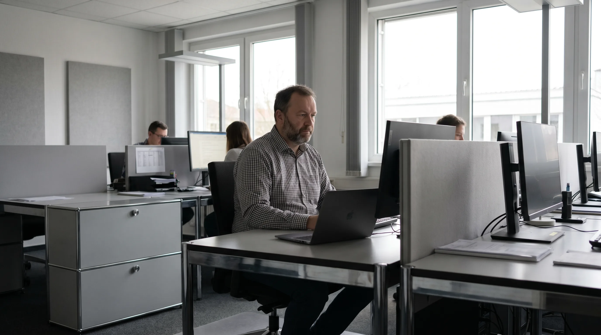

Schutz · Endpoint-Sicherheit
Guter Schutz ist meistens still. Er meldet sich nur, wenn es zählt.
Endpoint-Schutz ist keine Mauer, die alles abblockt. Es ist eine Wache, die fortlaufend mitläuft, weiß, was bei Ihnen normal ist, und eingreift, sobald etwas davon abweicht. Die meiste Zeit bekommen Sie davon nichts mit, und das ist der Sinn.
Signal statt Lärm
Tausend normale Vorgänge. Einer fällt auf.
Der Wert liegt nicht darin, ständig Alarm zu schlagen, sondern das eine zu finden, das wirklich abweicht, und es einzudämmen, bevor es größer wird. Ruhig, nachvollziehbar, ohne Panik-Anzeige.
erkannt, eingedämmt, gemeldet
Was bei einer Auffälligkeit passiert
Drei Schritte, ein durchgehender Weg.
Eine Auffälligkeit verschwindet nicht in einer Warteschlange. Sie läuft denselben Weg, vom ersten Hinweis bis zur Notiz in Ihrem Bericht.
Schritt 01 · Erkennen
Abweichung fällt auf
Die Wache kennt das normale Verhalten Ihrer Geräte. Was davon abweicht, wird erkannt, automatisch und rund um die Uhr, auch nachts.
Schritt 02 · Eindämmen
Bevor es größer wird
Verdächtiges wird abgeriegelt, damit es sich nicht ausbreitet. Ein betroffenes Gerät wird eingegrenzt, der Rest läuft weiter.
Schritt 03 · Melden
Sie erfahren davon
Was passiert ist und was getan wurde, steht nachvollziehbar fest. Im Monatsbericht lesen Sie es in normaler Sprache nach.
Eindämmen heißt nicht, dass nie etwas passieren kann. Es heißt, dass ein einzelner Vorfall ein einzelner Vorfall bleibt und nicht zum Stillstand im ganzen Betrieb wird. Schaden begrenzen, nicht Wunder versprechen.

Die meiste Zeit passiert nichts Auffälliges. Genau das ist der Plan.
Schutz, der im Hintergrund läuft
Was die Wache tut. Und was wir nicht behaupten.
Was der Schutz leistet
- Fortlaufende Beobachtung jedes Geräts, nicht nur ein Virenscan nach festem Plan.
- Erkennt verdächtiges Verhalten, nicht nur bereits bekannte Schädlinge.
- Grenzt ein betroffenes Gerät ein, damit sich nichts weiter ausbreitet.
- Läuft automatisiert, rund um die Uhr, mit europäischem Anbieter.Automatisierte Funktion, kein durchgehend besetztes Lagezentrum mit Menschen.
- Jeder Vorfall steht im Monatsbericht: was war, was getan wurde, was offen ist.
Wo die Grenze liegt
- Kein hundertprozentiger Schutz. Wer das verspricht, sagt nicht die Wahrheit.
- Kein rund um die Uhr besetztes Sicherheitszentrum und keine Garantie, jeden Angriff zu stoppen.
- Schutz ersetzt kein Backup. Der Rückweg, wenn doch etwas durchkommt, ist eine eigene Leistung.
- Sehr individuelle Sonderfälle sehen wir uns getrennt an, nicht im Standardautomatismus.
Endpoint-Schutz greift mit Endpoint & Patch und Backup ineinander. Aktuelle Geräte bieten weniger Angriffsfläche, die Wache erkennt, was trotzdem auffällt, und das Backup ist der Rückweg, wenn es ernst wird. Jeder Baustein hat seine eigene Seite und seine eigene Grenze.
Am Ende zählt, dass es ruhig bleibt.
Im Erstgespräch sehen wir uns an, wie Ihre Geräte heute geschützt sind und wo eine ruhige, mitlaufende Wache den Unterschied macht. Ohne Verkaufsdruck, ohne Vertrag im ersten Schritt.
B2B · Köln und NRW · europäischer Anbieter